Saúde
Digital
Ecossistemas em Saúde Digital e Soberania no Século XXI
Inscrições até 24/11 · Submissões até 30/10 · Presencial ou online
gratuito
O desafio dos
ecossistemas
O 2º Encontro Internacional de Saúde Digital promove o intercâmbio de experiências, políticas e inovações para consolidar ecossistemas digitais em saúde, com foco em equidade, sustentabilidade e fortalecimento do SUS.
A programação reúne conferências com palestrantes internacionais, mesas-redondas, oficinas, fóruns de políticas públicas, pitches de startups e spin-offs, rodadas de cooperação e apresentação de trabalhos.
Público-alvo
Comunidade acadêmica
Estudantes, professores e pesquisadores da graduação, da pós-graduação e do ensino técnico.
Multidisciplinar & tech
Profissionais de saúde, TI, sistemas e mídias digitais.
Gestão & serviços
Gestores e profissionais do SUS e da rede privada de saúde.
Ecossistema de inovação
Empreendedores, startups e investidores do setor de saúde digital.
Engenharias
Engenharia biomédica, de computação, de software, elétrica, de produção e demais áreas que criam tecnologia para a saúde.
Programação
- Carla Freire CeledônioFiocruz
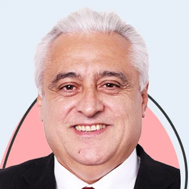
Luiz Odorico Monteiro de AndradeFiocruz Ceará- Maria Aparecida Cina da SilvaSEIDIGI · Ministério da Saúde
- Tania Mara CoelhoSESA-CE · CONASS
- Rilson AndradeCOSEMS-CE · CONASEMS
- Adriano da SilvaIcict/Fiocruz
- Antonio Carlos Onofre de LiraSociedade Brasileira de Informática em Saúde (SBIS)
- Sales ÁvilaEscola de Saúde Pública do Ceará
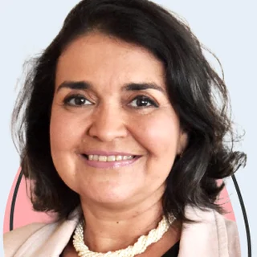
Ivana Cristina BarretoFiocruz Ceará
- Vinicius Oliveira[Instituição a confirmar]
- Ana FurnielCampus Virtual Fiocruz
- Luiz Odorico Monteiro de AndradeFiocruz CearáCoordenação
- Maria Aparecida Cina da SilvaSEIDIGI · Ministério da Saúde
- Diego Eugenio PizettaMinistério do Desenvolvimento, Indústria, Comércio e ServiçosOn-line
- Joana MeirellesFINEP · Área de Saúde e Transformação DigitalOn-line
- Tania Mara CoelhoSESA-CE · CONASS
- Rilson AndradeCOSEMS-CE · CONASEMS
- Cui YingChinese Center for Disease Control and Prevention · China
- Representante da RússiaA confirmar
- Sebastian Garcia SaisóOPAS/PAHO · Departamento de Evidência e Inteligência para Ação em SaúdeOn-line
- Ivana Cristina BarretoFiocruz CearáCoordenação
- Francisco Eduardo de CamposFiocruz
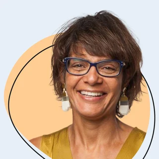
Cláudia PernencarPolitécnico de Leiria · LIDA · Portugal- Adriano da SilvaIcict/Fiocruz
- Melanie MaiaIHMT, Universidade NOVA de Lisboa · Portugal
- José Luis Paiva de MendonçaEscola de Saúde Pública do Ceará · SESA-CE
- Luis Gustavo KiatakeSociedade Brasileira de Informática em Saúde (SBIS)Coordenação
- Bruno BorghiAssociação Brasileira de Startups em SaúdeCoordenação
- Bruno PortelaProcuradoria da Fazenda Nacional · LABORI/AGUOn-line
- Teresa SacchettaInterSystems · Saúde Digital Brasil
- Marcelo SilvaABRADIS
- Elaine AndradeFiocruz CearáCoordenação
- Chen ChenUniversidade de Wuhan · China
- Luciana da Costa FeitosaDEMAS/SEIDIGI · Ministério da Saúde
- Félix RigoliODISSEIA · NETHIS/Fiocruz
- Vitor Jorge Woytuski BrasilUniversidade Federal do Paraná (UFPR)
- Adriana Macedo MarquesProcuradoria da Fazenda Nacional · LABORI/AGU
- Wuleta LemmaUniversidade Lusófona · Portugal
- Raphael de Freitas Saldanha[Instituição a confirmar]
- Wei ZhangTongji Medical College, Huazhong University of Science and Technology · China
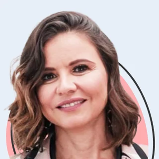
Adriana BaceloFiocruz CearáMediação
- Jian WangUniversidade de Wuhan · China
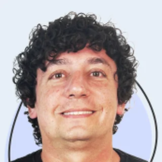
Paulo AguilarUFC QuixadáCoordenação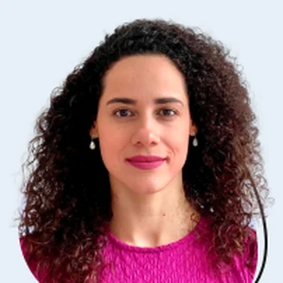
Aline EvangelistaFiocruz CearáCoordenação- Rebecca[Sobrenome e instituição a confirmar]Coordenação
- Luiz Odorico Monteiro de AndradeFiocruz CearáCoordenação
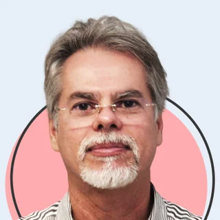
Garibaldi GurgelFiocruz PernambucoCoordenação- Carlos GadelhaFiocruz
- Representante da RússiaA confirmar
- Rodrigo GaeteMinistério da Saúde · Atenção Primária
- Tassia CarneiroPrefeitura do Recife · Telessaúde
- Lan YaoTongji Medical College, Huazhong University of Science and Technology · China
- Debora Dupas[Instituição a confirmar]
- Francisco Eduardo de CamposFiocruz
- Claudia HoirischFiocruz · Vice-Presidência de Saúde Global e Relações InternacionaisCoordenação
- Leonardo CastroSaúde Amanhã · ENSP/Fiocruz
- Cui YingChinese Center for Disease Control and Prevention · China
- Representante da RússiaA confirmar
- Luiz Odorico Monteiro de AndradeFiocruz Ceará
Passe o mouse ou clique em uma sessão para ver mais. Observação: a programação acima pode sofrer alterações.
Palestrantes
Confira abaixo.
Mesas 1, 5 e 6. Nomes a confirmar.
Submeta seu
trabalho
A submissão é gratuita e não exige vínculo institucional. Podem participar: Pesquisadores, docentes, estudantes, profissionais de saúde, gestores, desenvolvedores e empreendedores, do Brasil ou do exterior.
Trabalho concluído ou em andamento, com introdução, objetivo, metodologia, resultados e conclusão.
Vídeo da Trilha de Inovação e Empreendedorismo, para a Mostra de Startups e Spin-offs. Podem ser enviadas iniciativas de ideação à soluções.
Comissão organizadora
Coordenação geral
-
Ivana Cristina de Holanda Cunha BarretoFiocruz Ceará · Brasil
-
Luiz Odorico Monteiro de AndradeFiocruz Ceará · Brasil
-
Elaine Silva Nascimento AndradeFiocruz Ceará · Brasil
Comissão científica
Nomes a confirmar com a equipe do evento.
Comissão executiva
Nomes a confirmar com a equipe do evento.
Contato
Fotos: Fiocruz Ceará / LARIISA Saúde Digital
Veja quem nos apoia
-
-
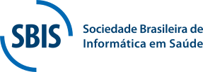
-
-
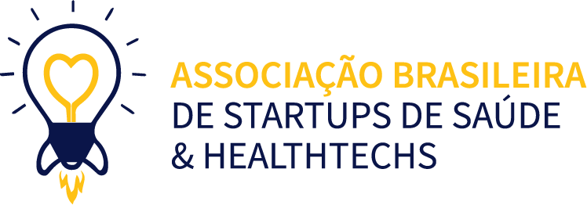
-
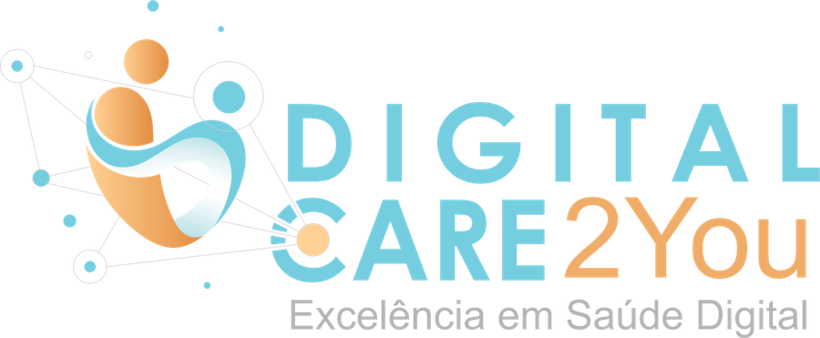
-
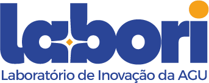